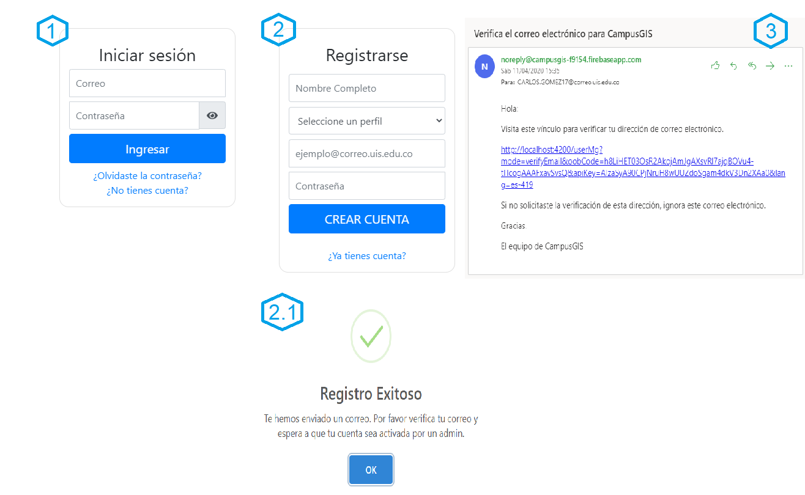
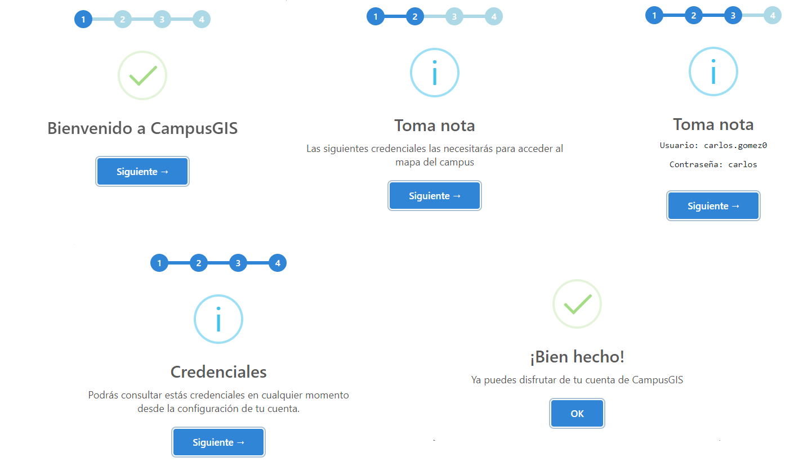
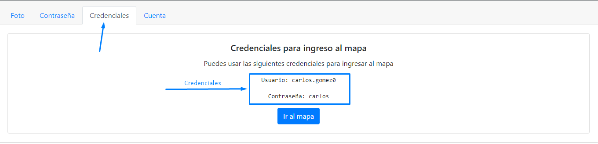
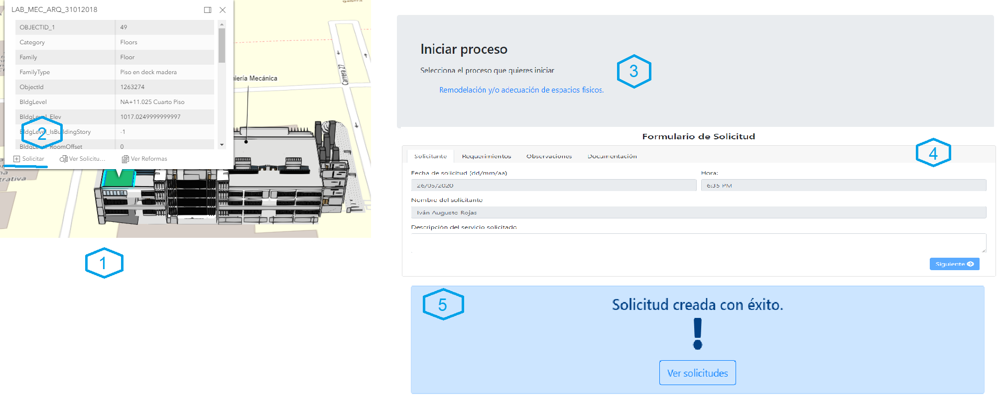
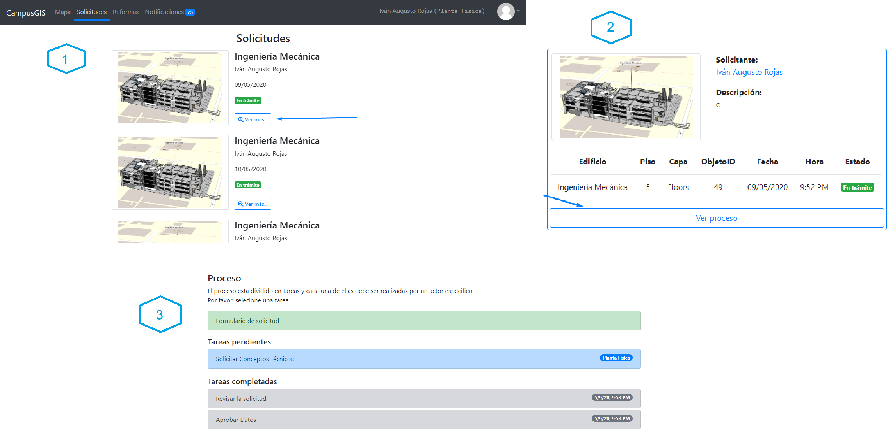
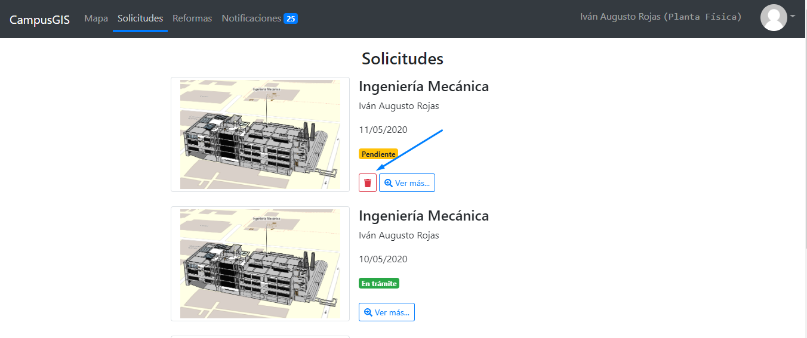
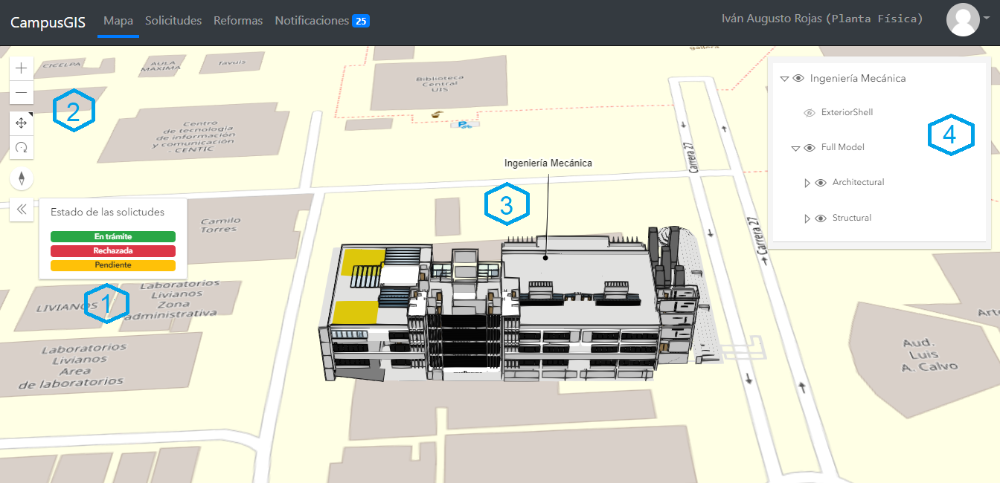

1. Ingreso, registro y validación.
En el siguiente diagrama se presentan las instrucciones para el ingreso, registro y validación.
- En caso de que el usuario se encuentre registrado en la aplicación, podrá ingresar mediante un formulario de ingreso.
-
En caso de que el usuario no se encuentre registrado, podrá registrarse mediante un formulario de
registro. Por otro lado, es importante mencionar que cualquier tipo de usuario podrá registrarse
en la aplicación.
2.1. Una vez el usuario haya llenado correctamente el formulario de registro, se presenta un mensaje notificándole que debe ingresar al correo para validarlo. - Se envía un correo de validación al correo institucional del nuevo usuario. Aquí el usuario debe dar clic en el enlace del correo para que sea redirigido a la aplicación y su correo sea verificado. Después, el usuario queda a la espera de ser activado por el administrador de la aplicación.
2. Credenciales para ingreso al mapa.
Una vez el usuario validó su correo y fue habilitado por el administrador para ingresar a la aplicación, al momento de ingresar a la aplicación, se encontrará con el componente del mapa, en el cual se le muestra una serie de mensajes de bienvenida y demás información relevante para el usuario; entre ella, las credenciales para ingresar al mapa.
Los anteriores mensajes de bienvenida únicamente se muestran cuando es la primera vez que se ingresa a la aplicación. Por lo tanto, se debe tomar nota de las credenciales porque son de utilidad al momento de ingresar al mapa con la edificación. Por otro lado, si olvida las credenciales se acceso al mapa, podrá verlas en el apartado de configuración de la cuenta, en el item “Credenciales”.
3. Solicitud de remodelación y/o adecuación de espacios físicos.
A continuación se muestra el paso a paso para realizar una solicitud de remodelación y/o adecuación.
- Después de ingresar al mapa, se debe seleccionar el elemento de la edificación que corresponda al espacio al cual se va a remodelar o adecuar.
- Una vez seleccionado el elemento, aparece una ventana emergente, en donde se debe seleccionar de la parte inferior izquierda, el botón “Solicitar”.
- Se debe seleccionar el proceso de remodelación y/o adecuación de espacios físicos.
- Después, se debe diligenciar un formulario con los datos de la solicitud.
- Finalmente, después de llenar el formulario de solicitud adecuadamente y oprimir el botón de enviar, se muestra un mensaje que notifica que la solicitud fue creada satisfactoriamente.
4. Ver proceso de la solicitud.
El proceso de solicitud hace referencia a las diferentes tareas o etapas asociadas a la solicitud. En la siguiente ilustración se describe el paso a paso a seguir para ver el proceso de la solicitud.
- Se debe ingresar al componente de las solicitudes seleccionando “Solicitudes” del menú de la aplicación. Posteriormente, ver los detalles de la solicitud interesada seleccionando el botón “Ver más” de la solicitud.
- Una vez estando en los detalles de la solicitud, se selecciona el botón “Ver proceso” ubicado en la parte inferior.
- Se muestra información del proceso que influye: formulario de la solicitud, tareas pendientes por realizar y tareas completadas. De esta manera, el usuario puede entrar y ver en que tarea se encuentra su solicitud.
5. Eliminar solicitud.
En muchas ocasiones puede ocurrir que se realice una solicitud y por algún motivo se desee eliminarla. Por esto, a continuación, se describir el proceso para eliminar una solicitud realizada.
Se debe ingresar al componente de las solicitudes seleccionando “Solicitudes” del menú de la aplicación para observar todas las solicitudes. Luego, se selecciona el botón de eliminar de la solicitud que se desea eliminar. Es importante mencionar que, dicho botón sólo aparece para aquellas solicitudes que están pendientes y que fueron realizadas por el usuario.
6. Intervenir en el proceso de la solicitud.
Para intervenir en el proceso de la solicitud se deben de cumplir dos requisitos:
- Estar en el componente de los detalles del proceso.
- Entrar a una tarea pendiente que le fue asignada. Cada una de las tareas pendientes tiene en la parte derecha el perfil o el usuario que debe completar la tarea.
Una vez se cumplen con los requisitos anteriores, se pueden completar la tarea realizando las actividades correspondientes de la tarea.
7. Módulo BIM-GIS.
El módulo BIM-GIS es el componente de la aplicación en donde se encuentra el modelo de la edificación dentro de sistema de información geográfica. A continuación, se presentan los diferentes controles o medios de manipulación para trabajar con el modelo y el SIG.
- Información de estado de las solicitudes: Este es un elemento meramente informativo y se presenta para informar a los usuarios sobre en qué estado se encuentra la solicitud asociada a los elementos de la edificación.
- Controles del mapa: Estos son controles para manipular el mapa; se usan para alejar o acercar el mapa, alternar desplazamiento panorámico y rotación en 3D.
- Edificación: Este es el modelo de la edificación y tiene asociado el nombre en la parte superior. Además, tiene los diferentes elementos como puertas, pisos, escaleras, ventanas, etcétera. Algunos de los elementos están en un color distintivo lo que significa que estos elementos están asociados a una solicitud.
- Capas de la edificación: Es una lista con todas las capas del edificio. Estás capas pueden activarse o desactivarse según el interés del usuario.